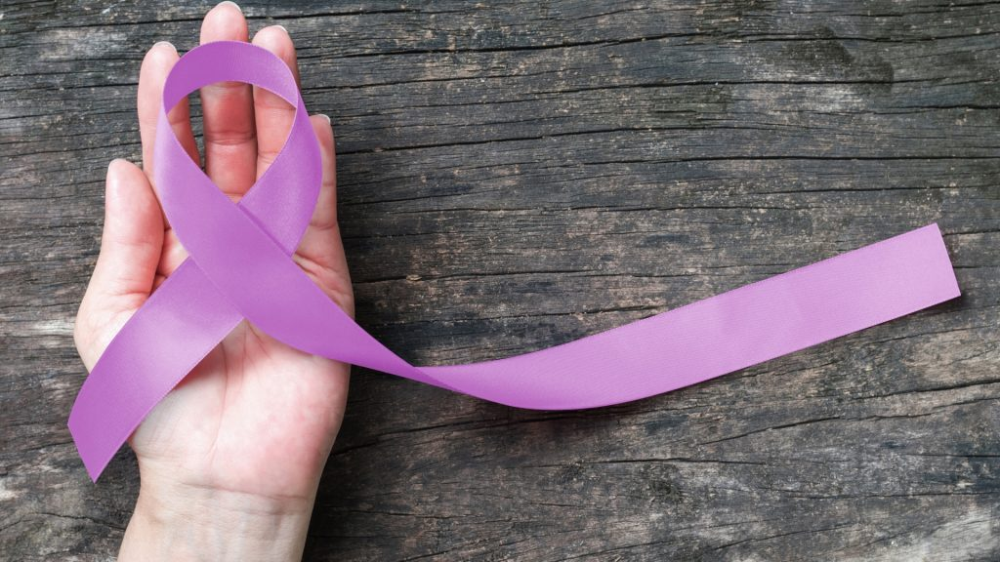

Mês do combate ao câncer: tudo o que você precisa saber sobre câncer de boca
12/02/2020
No mês de fevereiro é celebrado o Dia Mundial do Combate ao Câncer. Apesar dos cânceres de próstata, mama e pulmão serem os mais comuns, os números crescentes de casos de câncer de boca têm alertado e exigido mais atenção e informação à população.
De acordo com dados do Instituto Nacional de Câncer (INCA), o Brasil é o terceiro país com o maior número de ocorrências de câncer de boca no mundo, com cerca de 15 mil casos por ano.
Entenda melhor o câncer de cavidade oral:
O que é?O câncer de cavidade oral, popularmente conhecido como câncer de boca, é um tumor maligno que afeta os lábios e estruturas da boca, como gengivas, bochechas, céu da boca e língua.
SintomasOs principais sinais que podem ser observados são: lesões na cavidade oral ou nos lábios que apresentam problemas de cicatrização, manchas, placas vermelhas ou esbranquiçadas na língua, gengiva, céu da boca ou bochecha, nódulos e caroços no pescoço, rouquidão persistente, dificuldade na mastigação ou na fala.
Fatores de riscoA maioria das causas do câncer de boca estão relacionadas a hábitos nocivos à saúde. Dados da Organização Mundial da Saúde (OMS) apontam que 90% dos casos da doença estão ligados ao consumo de cigarro e álcool.
- Fumo: O Hospital A.C Camargo aponta que a chance de pessoas fumantes desenvolverem câncer de boca é de seis a 16 vezes maior que as não fumantes.
- Álcool: o consumo de bebidas alcoólicas é um fator de risco, principalmente entre os bebedores excessivos, que bebem mais de 21 doses de álcool por semana.
- Idade: a ocorrência do câncer de cavidade oral aumenta com a idade.
- Gênero: há maior incidência da doença em homens acima de 60 anos. É importante ressaltar que dois terços dos pacientes são homens.
- Sexo oral: a infecção pelo HPV pode causar câncer de boca.
- Exposição ao sol: o câncer de lábio acomete profissionais que trabalham ao ar livre e são expostos em excesso à radiação do sol.
- Alimentação: dietas pobres em frutas, legumes e verduras também estão associadas a0 maior risco de câncer de boca.
Assim como os demais tipos de câncer, o de cavidade bucal tem maior chance de cura com o diagnóstico precoce. De forma geral, o tratamento envolve cirurgia oncológica e/ ou sessões de radioterapia. A indicação de tratamento vai depender da avaliação médica do caso.
PrevençãoComo o câncer de cavidade oral é silencioso e, muitas vezes, indolor, a avaliação periódica do dentista é fundamental para prevenir e diagnosticar precocemente a doença. A indicação é de consultas semestrais com o cirurgião-dentista da sua preferência.
É importante ressaltar que o câncer de boca está muito relacionado ao estilo de vida do paciente, por este motivo é importante redobrar a atenção aos fatores de risco.
*Este artigo contou com o apoio de informações oficiais do INCA, Instituto A.C Camargo e OMS.